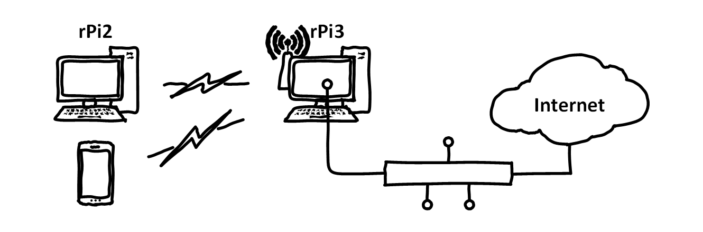

The overall goal of this lab. is to combine the previously acquired networking knowledge on networking with wireless communications and some more sophisticated address management. This will be achieved using available tools and software in Linux to manage a small network.
After this lab you will be able to:
Understand how basic Wi-Fi works
Understand how IP Masquerading works
Use Linux commands and software for:
creating a Wi-Fi access point
enabling IP Masquerading and NAT
Lab. Exercises
Please read each exercise entirely before starting to solve it.
Remember you should deliver a report after the networking module is finished. It should include the main commands and configurations necessary to complete each exercise. Do not forget to take notes while solving the exercises so you do not have to repeat them.
These exercises should be completed in teams.
Wireless Raspberry Pi Router

This exercise builds on the work that has been done in the previous weeks. Your router rPi should already have all the necessary software but if you have skipped any steps in the previous labs. make sure nothing is missing.
The final goal of this exercise is to create a simple wireless router using only open-source software in your Raspberry Pi (rPi). To reach this goal we will connect the router rPi to the Internet using the Ethernet card and use Wi-Fi to connect the client. As seen in the figure, in the end, you should be able to wirelessly connect multiple devices to your router and they should automatically get all the required network configurations to access the Internet.
Software Checklist
The router must have the following packages installed:
tcpdump
isc-dhcp-server
hostapd
apache2 or nginx (for the additional exercise only!)
The client does not require any specific software.
Configuring a wireless router
Configure a static IP address for the network interface wlan0.
Configure the hostapd software previously installed in order to create a Linux Wi-Fi access point.
start, and optionally enable, the hostapd.service
Activate DHCP on the interface wlan0 on the isc-dhcp-server configuration file (and remove eth0).
Re-configure the DHCP server properties in the dhcpd.conf file without forgetting:
to declare this DHCP server as authoritative;
to specify a subnet and range matching the IP/mask of wlan0;
to provide the required DNS information;
to specify the router as the default router;
to assign a fixed IP address to the client.
start, and optionally enable, the isc-dhcp-server.service
The interface wlan0 may not show an IP address until it is “UP”, which means until it is being used. In particular, it wlan0 may only be seen as up after starting hostapd
Make sure that the wlan0 interface is unblocked, you can check it with the command rfkill and that it is not connected to any wireless network.
Note also that changes in configuration files are not automatically applied. Typically you can simply restart the service in question (e.g. the dhcpcd.service or the networking.service), however a reboot is sometimes easier.
An example on how to configure an access point with hostapd can be found in the file hostapd.conf or hostapd.conf.gz, the latter can be extracted with the command gunzip. This includes many options, from which ssid and wpa_passphrase should obviously be edited, but also other less trivial options that should look like this:
Before the start/enable of the hostapd service do not forget to point to its configuration file by editing the service’s default options located at “/etc/default/”.
If the hostapd service is reported as masked you can use systemctl unmask hostapd to unmask it.
Remember that the isc-dhcp-server.servicewill not start if the chosen interface is not up or if it does not share a common subnet space with the specified configurations.
Configuring the client
Update the configuration of the dhcpcd.conf file from the client so that it connects to the created wireless network. For this you need to make sure that the interface wlan0 is not using any static configuration, so that it uses DHCP and wpa_supplicant (default) to automatically connect to the wireless network.
Restart the dhcpcd service with systemctl and verify that the wlan0 interface has the static IP address you have specified.
Confirm that you have wireless connectivity between both Pis and disconnect the Ethernet cable if successful.
Try to connect to the network with your phone or laptop.
Remember that if you Ethernet interface has been configured with a static IP address, it will not use DHCP, unless you used a “fallback configuration”. Consider reviewing the dhcpcd.conf file on your client.
The required configuration of a wireless interface to automatically connect to a network can be done by editing the wpa_supplicant.conf. This file should have a network entry looking like this:
Even though your client/phone/laptop can connect to the wireless network you created, Internet connectivity will still not be available. For this we need to use IP Masquerading.
Connect your router to the Internet using the available Ethernet interface, if you have not done it yet, and test for connectivity.
Enable IP forwarding in the router and activate IP Masquerading with the following commands:
sudo sysctl -w net.ipv4.ip_forward=1sudo iptables -A FORWARD -d 255.255.255.255/32 -i eth0 -o wlan0 -j DROPsudo iptables -A FORWARD -d 255.255.255.255/32 -i wlan0 -o eth0 -j DROPsudo iptables -t nat -A POSTROUTING -o eth0 -j MASQUERADEsudo iptables -A FORWARD -i eth0 -o wlan0 -m state --state RELATED,ESTABLISHED -j ACCEPTsudo iptables -A FORWARD -i wlan0 -o eth0 -j ACCEPT
Verify that the client is now able to connect to any Internet server.
IP forwarding is necessary for a Linux machine to act as a router and forward packets from one interface to another. You can debug/monitor your interfaces using tcpdump.
IP Masquerading is commonly referred to as NAT (Network Address Translation) but is slightly different because it is mainly used to hide private IP addresses and not remapping IP address spaces.
Additional Exercise
In the previous exercise you have enabled routing between several wireless-capable nodes and even used iptables for enabling IP Masquerading. However, we may not always want to allow access to all the nodes in our network and using iptables is a great way to achieve this. This exercise is optional and can be accomplished in several different ways.
Hardened Pi Router
The goal of this exercise is to:
Block all traffic coming for the range of IPs given by your DHCP server (i.e. only manually configured or fixed IP addresses can access the Internet).
In addition to redirecting traffic, modify the URL of an HTTP request to another destination.
You only need to edit the configurations of your router.
To redirect traffic you can use iptables DNAT to change the destination of traffic to a predefined server address.
To modify URLs you can combine DNAT with a locally running webserver such as nginx hosting rules for manipulating HTTP headers.
Validation
Ask your double team to test their setup and let them test yours.
Think and write about the weaknesses of the used approach to a firewall.
Try to beat it!
Final Steps
Learning Goals
In your double-team, reflect about what you learned today. Write a few sentences that capture (in your own words) what you learned and why it can be useful. Share these few sentences with everyone in the double-team. (You should use this text in the individual reflection below.)
Each team gets their own combination lock so you can store the box in the lockers in the lab.
The locks come opened and with the opening combination set.
Take a picture of that combination in your phone, so you remember it.
Do not attempt to change the code. (You do so by turning the locks opening 180 degrees and then setting them — don’t do that by accident.)
Cleaning Up
Put all hardware back into the box.
Store the box in one of the lockers in the lab, using the combination lock.
Connect all parts of the PC back to it (keyboard, mouse, monitor).
Take out any trash. (Even if its not yours… thank you!)
Put the chairs back to the table.
Individual Exercises
We recommend that you take some time to consider if there are any parts of this unit that you want to repeat individually, at your own pace. If you decide to do so, you have several options:
You have access to the hardware box at all times from the lockers. Just make sure everyone in your team knows where the box is, and put it back into the locker.
Install a Raspberry Pi Image on a Virtual Box in your PC. With this, you always have a Raspberry Pi with you.
Some of the Linux-related exercises also work on the Linux-PCs in the lab.